Ein achtbeiniger Laufroboter, den ich komplett selbst konstruiert, gedruckt und verkabelt habe. Jedes Bein hat drei Servos, insgesamt sind es 24. Der aktuelle Stand V0.2 steht ohne Akku auf eigenen Beinen. Das große Ziel ist, irgendwann eine Treppe hochzusteigen.
Ausgangslage
Angefangen hat es mit einem Bausatz für einen Laufroboter, dem Maker Kit Bionic von fischertechnik, den ich interessant fand. Für 170 € kaufen wollte ich ihn aber nicht. Stattdessen habe ich mir überlegt, ob ich so etwas günstiger selbst bauen kann, und es dabei gleich besser machen.
Aus einem Brainstorming wurde eine Wunschliste: acht statt vier Beine, also ein Octopod, mit jeweils drei Servos pro Bein. Dazu ein Gimbal aus zwei Motoren, der einen Time-of-Flight-Sensor und einen Ultraschallsensor schwenkt. Der Ultraschallsensor soll auch Hindernisse aus Glas erkennen. Gesteuert werden sollte alles von einem günstigen ESP32.
Mit dem Gimbal wollte ich die Umgebung abtasten und eine grobe 2D-Karte erstellen. Geplant war dafür zuerst ein VL53L0X. Dann habe ich den VL53L1X kennengelernt, der mehr Daten liefert, inzwischen würde ich einen VL53L8CX nehmen.
Teileauswahl
Weil Geld sparen einer der Hauptgründe für das Projekt war, habe ich mit Google und KI recherchiert, welche Bauteile günstig auf Plattformen wie AliExpress zu bekommen sind und trotzdem gut dokumentiert sind.
| Controller | ESP32-S3 |
|---|---|
| Servos | 16× MG90S (Hüfte und Unterschenkel), 8× MG996R (Oberschenkel) |
| Servotreiber | 2× PCA9685PW, I²C |
| Versorgung | 3S-LiPo, 5200 mAh, ~11,1 V → Step-down auf 5 V |
| Absicherung | KFZ-Sicherung 15 A |
| Strommessung | INA226 mit Shunt |
| Sensoren | 2× VL53L1X (ToF), HC-SR04 (Ultraschall), MPU-9250 (IMU) |
Erster Prototyp V0.1
Bevor ich die achtbeinige Version gebaut habe, habe ich eine leichtere Version mit vier Beinen und zwei Servos pro Bein getestet. Damit wollte ich die Servos, die Treiberboards und die Stabilität der Drucke ausprobieren.
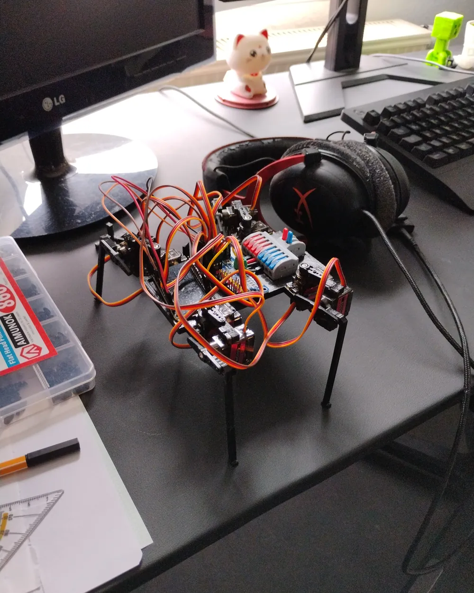
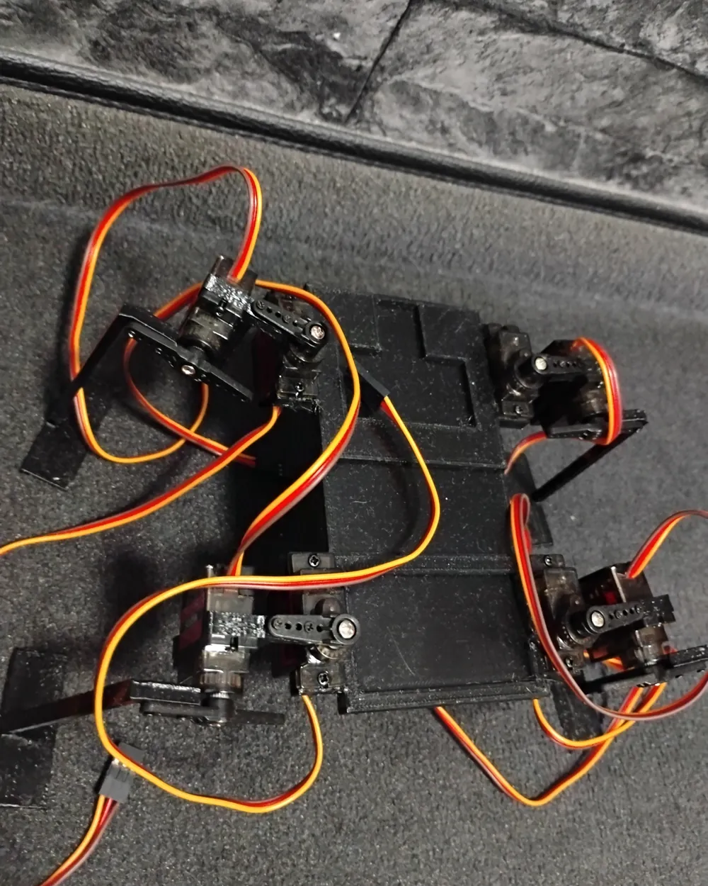
Der Prototyp hat schnell gezeigt, was nicht funktioniert. Mit vier Beinen war er bei Weitem nicht stabil genug, und die Elektronikbauteile rutschten aus den Vertiefungen, in die ich sie gesteckt hatte. Daraus habe ich zwei Dinge mitgenommen: Vier Beine reichen nicht, und Bauteile halte ich besser mit Stiften als mit Vertiefungen.
Konstruktion und Druck
Mit CAD habe ich in der Schule in Fusion 360 angefangen und es mir danach selbst weiter beigebracht. Der Octopod war das erste Projekt, bei dem ich das wirklich angewendet habe. Die Grundplatte hat acht Anschlüsse für die Beine, die Module darauf habe ich zuerst als Platzhalter eingezeichnet.
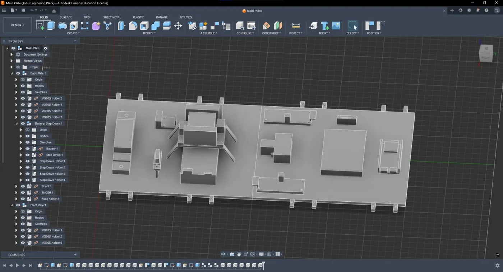
Einige Teile habe ich mit Dreiecksstreben konstruiert, damit sie stabil bleiben, aber wenig wiegen. Der Unterschenkel ist so etwa 18 cm lang. Beim nächsten Mal würde ich noch mehr Teile so aufbauen, damit der Octopod insgesamt leichter wird.
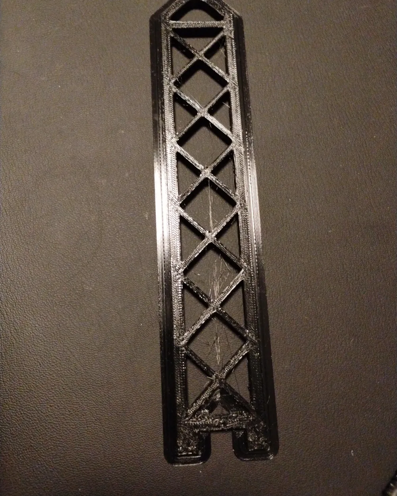
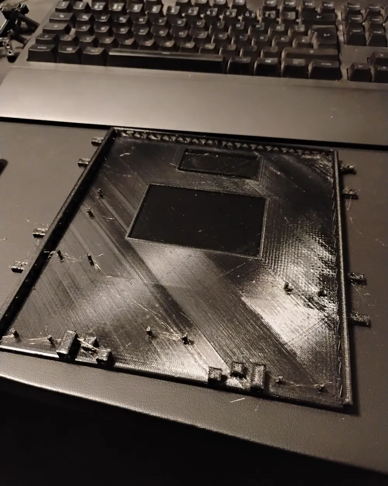
Gedruckt habe ich auf einem Ender 3 V2, den ich gebraucht geschenkt bekommen habe, weil er nur noch halb funktionierte. Ich habe die defekte Düse am Extruder repariert und das Druckbett neu nivelliert. Danach druckte er PETG ohne Probleme. PETG habe ich gewählt, weil es stabil und günstig ist und beim Drucken vergleichsweise wenig Dämpfe abgibt.
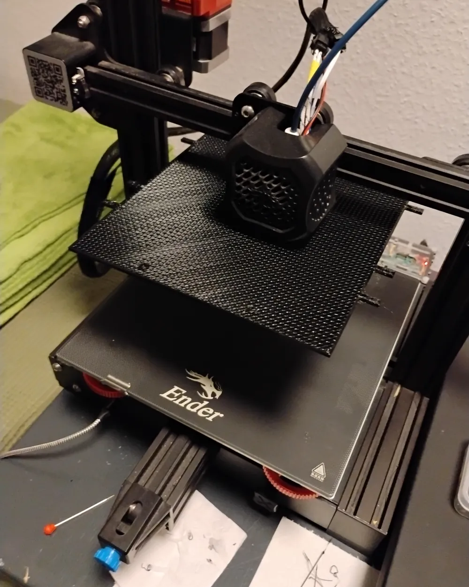
Aufbau V0.2
Den aktuellen Stand nenne ich V0.2 und weiter Prototyp, weil in der fertigen Version noch einiges dazukommen soll. Jedes Teil habe ich selbst konstruiert, gedruckt und so oft überarbeitet, bis alles zusammenpasste. Ohne das Gewicht des Akkus steht der Octopod, wenn er genug Halt hat, zum Beispiel auf einem Teppich.
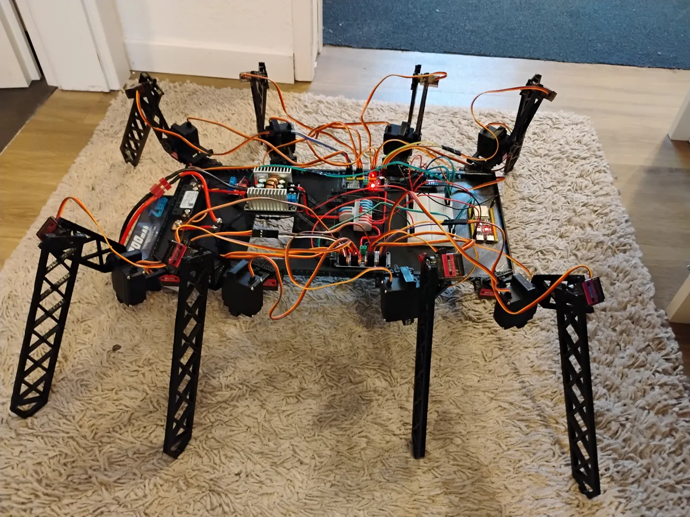
Die Grundplatte ist 40 cm lang und etwa 20 cm breit. Sie besteht aus einer vorderen und einer hinteren Hälfte, die über kleine, verschraubte Verbindungsteile zusammengehalten werden. Jedes Bein besteht aus drei Teilen mit je einem Servo: Ein MG90S dreht die Hüfte (Coxa) nach vorn und hinten, ein stärkerer MG996R hebt und senkt den Oberschenkel (Femur), weil dort das meiste Gewicht hängt, und ein weiterer MG90S knickt den Unterschenkel (Tibia).
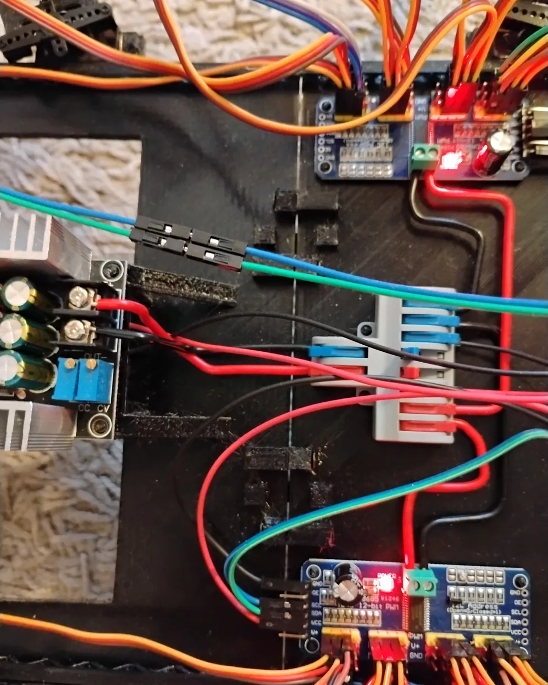
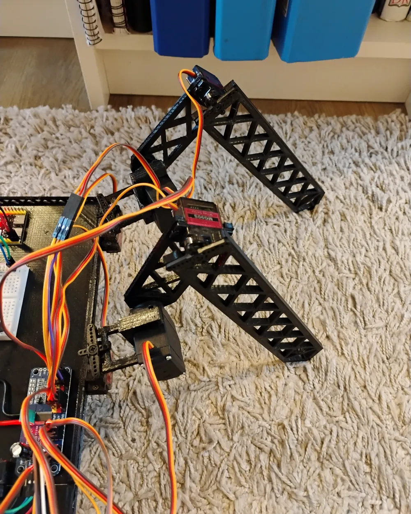
Elektrik
Die Energie kommt aus einem 3S-LiPo-Akku mit 5200 mAh und etwa 11,1 V. Der Pluspol läuft zuerst über eine KFZ-Sicherung, die bei mehr als 15 A auslöst und so einen Kurzschluss absichert. Danach folgt ein Shunt, über dem der INA226 den Spannungsabfall misst und daraus Strom und Spannung berechnet. Ein Step-down-Modul setzt die Spannung anschließend auf 5 V herunter, von dort wird sie auf die beiden Servotreiber und den ESP32 verteilt.
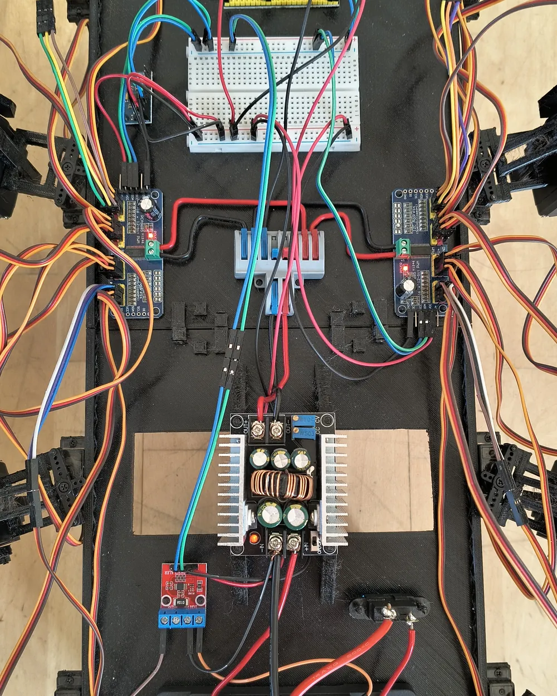
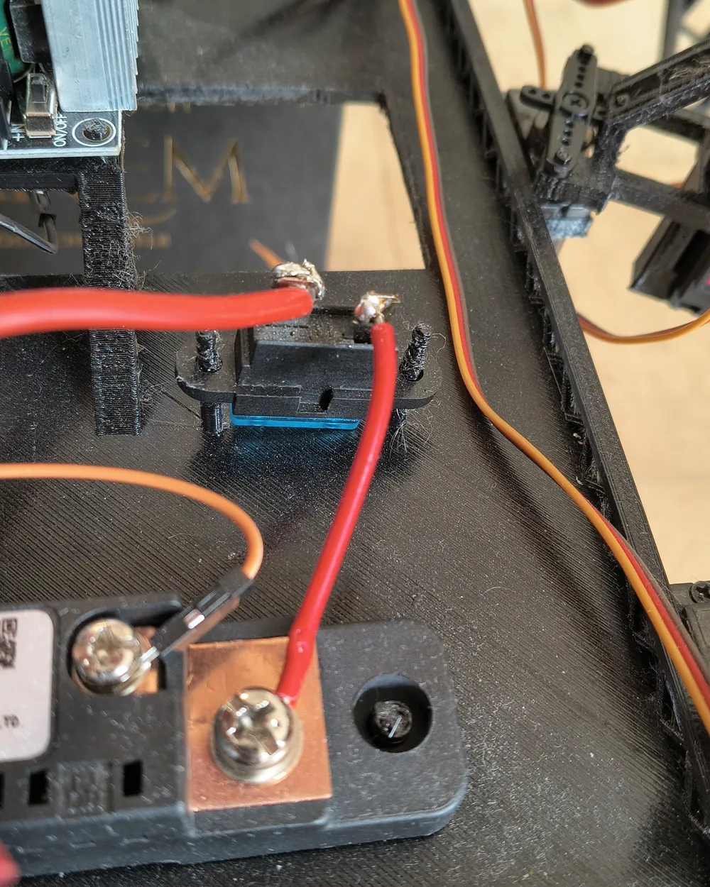
Auf dem Steckbrett nutze ich eine der beiden Plus-/Minus-Schienen, um die Versorgung an die Servotreiber und Sensoren zu verteilen. Die andere führt die I²C-Leitungen SCL und SDA, denn die beiden Servotreiber, der INA226 und die IMU MPU-9250 sprechen alle per I²C mit dem ESP32. Die Servos laufen direkt mit den 5 V aus dem Step-down.
Probleme und Verbesserungen
Sobald der Octopod stand, mit und ohne Akku, bogen sich die Gelenkhalter unter der Last. Die Kraft, die dort wirkt, hatte ich beim Konstruieren unterschätzt. Die Verbindungen gaben so stark nach, dass der MG996R gar nicht richtig zum Arbeiten kam: Bevor der Servo an sein Limit gekommen wäre, wären vermutlich die Verbindungen gebrochen.
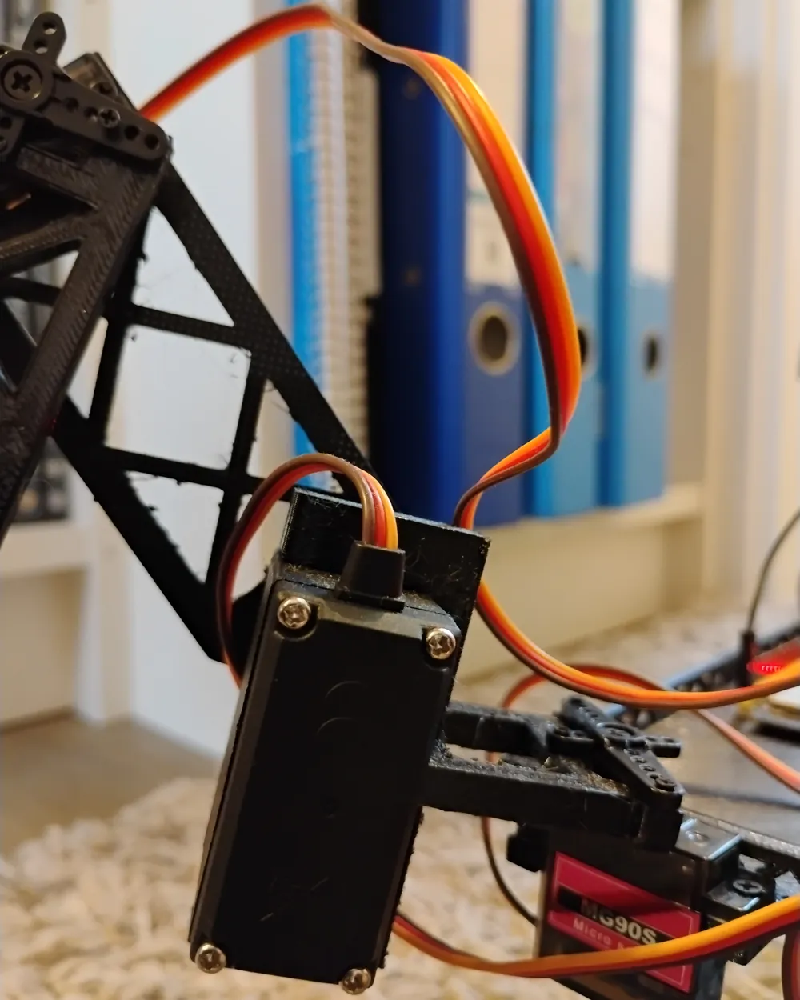
Einen Teil davon habe ich schon verbessert. Anfangs waren die Schrauben direkt ins PETG gedreht. Inzwischen gehen sie durch das PETG hindurch und werden auf der anderen Seite mit einer Mutter gekontert. Dadurch löst sich nichts mehr, und die Verbindungen sind deutlich stabiler. Trotzdem biegen sich die Servohörner noch stark, und die Getriebe der MG90S geben nach. Das eigentliche Problem ist, dass die Servos selbst die Gelenkachse bilden und die ganze Last tragen.
Für die nächste Version plane ich deshalb Kugellager parallel zu den Servos, ober- oder unterhalb des Gelenks, die die Verbindung führen und abstützen. Der Servo soll das Gelenk dann nur noch antreiben. Zusätzlich überlege ich, an jeder Achse einen MG996R statt der schwächeren MG90S einzusetzen.
Die Software kann bisher die Beine bewegen und den INA226 auslesen. Schwierig war dabei vor allem, dass fast jeder Servo in eine andere Richtung eingebaut ist. Gelöst habe ich das mit einer Tabelle, in der für jeden Servo die Drehrichtung als Vorzeichen hinterlegt ist.
Stand und nächste Schritte
Der Octopod ist ein laufendes Projekt. Zuerst muss er richtig laufen können. Danach soll er mit dem ToF- und dem Ultraschallsensor seine Umgebung abtasten, Hindernisse, Türen und Treppen erkennen und eine Karte des Raums anlegen. Über eine Webseite will ich ihn steuern, Parameter wie die Geschwindigkeit ändern und die Sensordaten ansehen. Ein kleines OLED-Display soll den Akkustand anzeigen. Mit der IMU und dem INA226 möchte ich die Beine kalibrieren, wenn sie sich verstellt haben, und ein eigener 6-V-Kreis für die Servos soll mehr Kraft liefern.
Das große Ziel ist, dass der Octopod eine Treppe hochsteigt. Vielleicht klappt das nicht, aber ich werde es versuchen.
Was ich gelernt habe
Die wichtigste Lehre aus V0.2 ist, dass ich vorher abschätzen muss, welche Last auf einem Teil liegt, und dann ausprobieren muss, ob es sie aushält. Beim Konstruieren der Gelenkhalter hatte ich die Last gar nicht bedacht, erst am stehenden Roboter hat sich gezeigt, dass sie nachgeben.
Bei Verbindungen im 3D-Druck hat sich eine einfache Lösung am besten bewährt: eine Schraube ganz durch das Bauteil und auf der anderen Seite eine Mutter. Das hält fest und ist einfacher als eingeschmolzene Gewindeeinsätze.
Außerdem würde ich beim nächsten Mal mehr mit Strukturen arbeiten. Beim Unterschenkel habe ich schon Dreiecke verwendet, die Grundplatte ist aber noch massiv. Mit einer Wabenstruktur aus Löchern hätte ich dort wahrscheinlich einiges an Gewicht gespart.